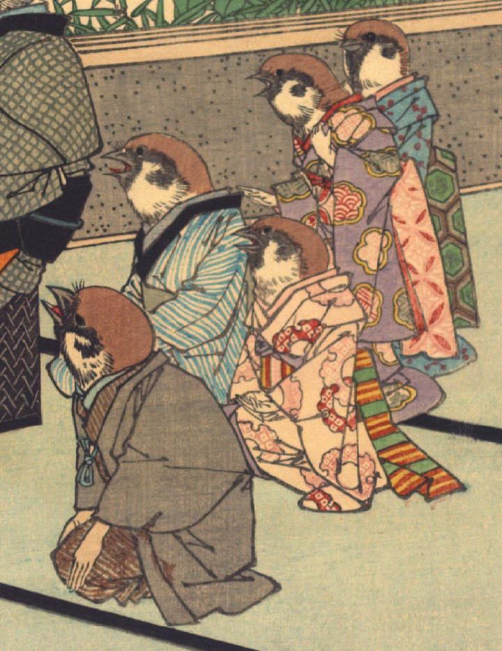

雀の家族。5体の雀がそれぞれ着物を着ている。袖から出ている手は人間のものである。一番手前に座っている雀は茶色の着物に黒い羽織りをまとっており、主人と思われる。その奥に座っている青い縞柄の着物をまとった雀は妻と思われる。その横に座る桃色の着物を着た雀、更に奥に立っている紫色の着物を着た雀と青色の着物を着た雀の3体は娘たちと思われる。
出典：親書誌：U426_nichibunken_0109：Le moineau qui a la langue coupée／日付：2006／資源識別子：U426_nichibunken_0109_0001_0000
Copyright (c)2010- International Research Center for Japanese Studies, Kyoto, Japan. All rights reserved.